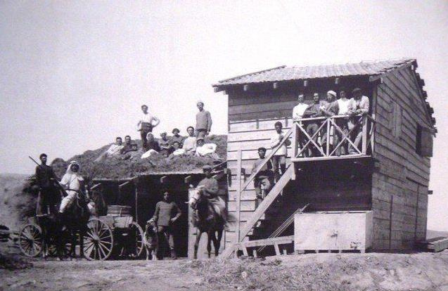

chapter17.3--handout
Background Information
The conflicting British and Jews 英国人和犹太人有什么恩怨纠葛
在我们的内容当中，科恩因为犹太人的身份经常受到英国人迈克的鄙视和不公平的对待。那么英国人和犹太人之间为什么会是存在这样的关系呢？
在以色列（Israel）建国以前，犹太人零散的分布在世界各地，一千七百多年的时间里，他们遭到了80多个国家的驱赶，成为了居无定所的游民（vagrant ）. 19世纪末期，一批犹太人来到巴勒斯坦（Palestine）, 在一战中组建军队协助英军打击奥斯曼土耳其（Ottoman Turks）而获得英国人信赖，英国也随后批准犹太人在巴勒斯坦地区建立家园。

随后欧洲出现了大规模的反犹太浪潮（anti-semitism）, 俄国、法国、德国和东欧地区，相继出现大规模迫害犹太人的事件，导致整个欧洲大陆形成了歧视犹太人的风气，因此出现了犹太复国主义（Zionism）.
二战期间大量犹太人选择偷渡至巴勒斯坦。无奈的是英军严密的封锁了巴勒斯坦海岸，只有少部分犹太人成功，大量犹太人只能在海上观望巴勒斯坦，最后伤心的离去。英国人一手帮助自己建立家园，又将自己拒之门外。
英国击沉一艘犹太人偷渡货船，造成了250名犹太人死亡的惨剧。此次事件让犹太人和英国的关系降到冰点，犹太人地下组织也就此对英国人展开了报复。
丘吉尔的好朋友遭到犹太人暗杀，于是8万英军浩浩荡荡开进了巴勒斯坦地区，大批犹太人激进分子被抓。犹太人也不甘示弱，秘密炸毁了英军驻巴勒斯坦司令部，造成大量英国人死亡。
二战结束后，盟军在德国集中营释放了数以万计的犹太人，但是犹太人的安置问题却成了一个头疼问题，西方各国都不愿意接纳，英则把责任推给了联合国。
Vocabulary
stagger
v. 蹒跚；摇摇晃晃地走 （ to walk or move unsteadily, almost falling over）
原文： So the bull-fighter chap sort of rather staggered over to him.
于是斗牛的小伙有点摇摇晃晃地向他走去。
💧stagger 还有“使震惊；使大吃一惊 ”的意思，比如：What staggered us was the sheer size of her salary.
令我们感到惊愕的是她的薪水之高。
massacre
v. 屠杀，残杀；损害，毁坏（kill a large number of people indiscriminately）
原文：Why he went in and found Brett and the bull-fighter chap in the bull-fighter's room, and then he massacred the poor, bloody bull-fighter.
啊，他来到这里，在斗牛小伙的房间里找到他和勃莱特在一起，然后他就宰了这可怜而该死的斗牛士。
💧massacre 作动词，是“大屠杀；残杀 ”的意思。比如：Troops indiscriminately massacred the defenseless population.
军队肆无忌惮地屠杀手无寸铁的民众。
Crush Your Problems

"My God! what a morning! And here's old Jake. Old Jake, the human punching-bag."
“我的上帝！好一个大清早！而老杰克却躺在这儿。老杰克，成了人体沙袋。”
💧表达精讲
punch 是“用拳猛击”的意思，所以punching-bag就是指“（练习拳击用的）沙袋，吊袋”（punching-bag是美式的表达，在英式英语中一般写作punchbag）.
如果某人是个“受气包，出气筒”（a target of frequent criticism or abuse）, 也就是经常被当作抱怨或泄愤的对象，我们就可以说这个人是个punching bag. 比如：a young wife whose husband used her as a punching bag（被丈夫当作出气筒的年轻妻子）
这里把Jake形容为the human punching-bag是因为他在前一天晚上挨了Cohn一拳，Bill调侃他被Cohn这个拳击手当成沙袋来练习拳击了。


Just ahead of them was the crowd, and some chap tripped and brought the whole lot of them down.
人们就在它们前面跑，有一个家伙绊倒了，接着倒了一大片。
💧表达精讲
①trip 作动词是“绊倒，倾翻”（to fall because of knokcing your foot against sth）的意思，比如He tripped over his cat.（他被他的猫给绊了一下。）
②bring...down 表示“使倒下”，这里说的是一个小伙子绊倒了引起很多人跟着倒下。另外bring down还有“使垮台”的意思，比如：They were threatening to bring down the government by withdrawing from the ruling coalition.（他们威胁要退出统治联盟以让政府垮台。）
③the whole lot of 表示全部，例如：The whole lot of them, from Citigroup to Morgan Stanley and Bank of America, all got whacked today.（从花旗集团到摩根士丹利和美国银行，所有这些银行今天都遭受了重创。）

"What a morning!" Bill said. "The damn police kept arresting chaps that wanted to go and commit suicide with the bulls."
“多带劲儿的早上！”比尔说。“倒霉的警察把那帮想投身牛犄角底下自杀的哥们儿都一个个逮捕了。”
💧表达精讲
commit suicide with the bulls 从字面上理解是“利用公牛自杀”，其实在原文中就是指这些人胆敢在公牛面前挥舞衬衫把公牛给惹怒，和自杀根本没什么两样。

"She wanted us to go down in the ring,too," Bill said. "She likes action." "I said it wouldn't be fair to my creditors," Mike said.
“她想把我们也拉到场子底下去呢，”比尔说。“她喜欢惊险场面。” “我说，这对我们的债主们可不公道了。” 迈克说。
💧表达精讲
action 可以理解为“一系列危险、刺激的行为动作（尤其是在电影中出现的那种）”（a series or number of fast-moving, exciting, or dangerous events, especially in a movie）. 比如：I liked the film because there was so much action.（我喜欢这部电影，因为里面有很多惊险刺激的动作。）
Bill在这里说的“我们”是指他还有和Edna同伙的英国人（他们碰巧是Mike的债主），所以Mike说“不公道”是调侃如果他们真的被拉到场子底下没了命，他就不用还债了。

"Wanted to make an honest woman of her, I imagine. Damned touching scene."
“我看，是想把她变成一个诚实的女人吧。那情景太感人了。”
💧表达精讲
make an honest woman of her 包含了一个make...of sb的结构，可以理解为turn sb into... “把某人变成……”； 这里按照字面上解释是“把Brett变成一个诚实的女人”（指Cohn要带Brett一起走的事），其实就是Cohn一厢情愿地想要Brett不再和其他人发生关系，而安分守己地跟他一起过日子。

"Brett's rather cut up. But she loves looking after people."
“勃莱特很伤心。但是她喜欢照顾别人。”
💧表达精讲
cut up 有“切碎”（cut sth into several pieces）, 在这里表示“心烦意乱的”（being upset about sth）, 比如：He was very cut up about Stephen dying.（斯蒂芬生命垂危，他为此十分难过。）

"I gave her a fearful hiding about Jews and bullfighters, and all those sort of people..."
“我把她臭骂了一顿，因为她总是跟犹太人、斗牛士以及诸如此类的人来往……”
💧表达精讲
give sb a hiding about sth 在这里指“（因为某事）而把某人臭骂一顿”；hiding原义是指“藏身之处”，此外还可以表示“（体罚式的）鞭笞，痛打”（a flogging, beating）,比如：You’ll get a good hiding when you come home!（你到家后会挨一顿臭揍的！）
从这个含义hiding还引申除了“被打败，遭受惨败”的意思，比如：The team got a hiding in their last game.（那支球队在最后一场比赛中被打得一败涂地。）

Always slept with a loaded service revolver. Brett used to take the shells out when he'd gone to sleep.
睡觉的时候总带着支实弹军用左轮手枪。等他睡着了，Brett常常把弹夹偷偷取出来。
💧表达精讲
①a loaded service revolver “上了实弹的军用左轮手枪”；loaded指“子弹上膛了的”；the service可以表示“军队”（the army）, join/be in the servies也就是“服兵役”；revolver指“左轮手枪”，revolve作动词有“旋转，转动”的意思，而左轮手枪上正好有一个转轮的设置（其实就是装着一个个子弹的弹槽），通过转动转轮，枪弹就可以逐发对准枪管，所以这种手枪就有了revolver这个名字啦~
②shell和bullet不完全等同，shell一般指装着子弹的“弹夹，弹药筒”（a metal tube containing a bullet and an explosive substance）, 而bullet则是子弹；另外shell也可以指大的“炮弹”（可以理解为炮弹的形状一般和坚果的外壳shell形似而得名）。
Content Analysis
Jake回到旅馆，Bill和Mike也正好从斗牛比赛的现场回来，他们还提到当时捣乱的年轻人里就有Edna的同伴（也就是Mike的债主们）。接着Jake从Mike那里得知，Cohn在那晚揍了他之后又气冲冲地去找Brett和Romero，扬言要把Brett带走，甚至出手狠狠地打了Romero, 还差点酿成悲剧——
💧Clue 1:Cohn tries to take Brett away and kill Romero that night.
Evidence 1:"Why he went in and found Brett and the bull-fighter chap in the bull-fighter's room, and then he massacred the poor, bloody bull-fighter."
“唉，他回到旅馆，在斗牛小子的房间里找到了他跟勃莱特，接着差点就杀了那个可怜又该死的斗牛士。”
Evidence 2:Brett wasn't having any shaking hands, and Cohn was crying and telling her how much he loved her, and she was telling him not to be a ruddy ass.
勃莱特压根不跟他握什么手，科恩就哭天抹泪地跟她说他多么爱她，她就跟他说别再像头蠢驴一样了。
在这之前，Cohn一直都沉浸在美好的幻想里（He was going to stay, and true love would conquer all）, 所以他默默忍耐着自己从Mike那儿受到的屈辱，但知道了Brett和Romero也纠缠在一起了的时候，他便恼羞成怒，出手打了Jake，这和本书开篇提到的他从不在拳击赛场外和人动手形成了鲜明对比（...being very shy and a thoroughly nice boy, he never fought except in the gym）.
但当Cohn天真地以为Brett会跟他一起走的时候（"Wanted to make an honest woman of her, I imagine. Damned touching scene"）, Brett反而让他滚开（"Brett gave him what for. She told him off"）. 最后他跟Romero来回互相打了几拳，下手都不轻。后面的情节紧接着我们昨天读到的内容：Cohn告诉Jake再也受不了要马上离开了（"I'm going away in the morning." He was crying without making any noise.）
关于Mike和Brett之间的关系在今天的情节里也有了说明：Brett当时在照顾受伤的Mike（"That's how we came to go off together. She was looking after me."）这和Brett跟Jake认识的经过相仿（Brett在一战中担任志愿护士）。Mike非常同情Brett和第一任丈夫的婚姻并不幸福，但同时也对她总是和犹太人以及斗牛士们混在一起很生气（"I said if she would go about with Jews and bull-fighters and such people, she must expect trouble"）. 为此，Mike总是为了Brett伤透心而喝得烂醉来麻痹痛苦——
💧Clue 2:Mike tries to numb his pain with liquor.
Evidence 1:"I'm rather drunk," Mike said. "I think I'll stay rather drunk. This is all awfully amusing, but it's not too pleasant. It's not too pleasant for me."
“我醉得不行了。”迈克说。“我想我会一直这么醉着。这整件事真是好玩，可是一点也不让人开心。对我来说太不开心了。”
Evidence 2:Mike started to open the bottle. "Would you mind opening it?" I pressed up the wire fastener and poured it for him.
迈克尔动手开酒瓶，“你帮我开一下行不行？”我压一下铁丝钩扣，把瓶盖打开，给他倒了一杯。
我们在前面提到，Mike两次向Cohn恶言相向，很大程度上来源于他在Brett面前的不安全感。这次Brett和Romero的私情对他来说更加无法承受，他只能继续用酒精麻痹自己。他喝到了什么程度呢？最后连酒瓶也没法打开而要求Jake帮忙。对于Brett的不忠，Mike只能容忍退让，但自己又饱受痛苦（这也解释了为什么Mike从在本书中一出场就是一个“嗜酒之徒”的形象）。
Today's Bonus
💧The US Personal Bankruptcy 美国个人破产制度
Mike因为破产欠了一大堆债，一直都没还清，到哪都说自己是undischarged bankrupt（“未偿清债务的破产者”） 。其实在美国，符合条件的个人破产者还可以申请破产，今天我们一起来了解一下美国的个人破产的制度吧~
首先个人破产制度在古希腊时期就有了雏形。在当时，如果个人没有办法还清债务，那么该人及其直系亲属（immediate family）就会一同被贬为奴隶身份（to be forced into slavery）, 直到他们所做的苦力可以抵偿欠下的债务为止（until the debt was worked off）.
而美国则是从1978年开始将消费者破产纳入破产法之中（以前只有企业破产）。所谓个人破产（personal bankruptcy）, 是指当个人资产远小于负债并且无力偿还时向法院申请破产，并接受法院对其财产进行清算（liquidation）和分配或者进行债务调整（reorganization）.
美国对个人破产的规定适用于三种债务人（debtor）:
- 消费债务人，主要指为自己、子女或家属的用途承担的金钱债务，一般因过度的消费引起破产。
- 营业债务人，指在营业中承担债务的合伙、个人等。
- 混合债务人，是指个人债务人有时兼有消费者债务和营业债务，在程序上适用个人破产程序。
以下是美国个人破产相关的一些其他制度：
自由财产制度（the exempt property system） 自由财产是指不属于个人破产财产范围、不受破产程序执行、能够由债务人自由支配的个人合法财产。其目的不仅是为破产人今后的生活提供基本的保障，而且也是保障宪法所要求的“健康而富有文化性的最低生活，并使破产人作为健全的市民有可能重新起步”。
个人破产和解制度（personal bankruptcy conciliation system） 在统一的破产法中确立和解制度是美国首创的立法方式，也是美国破产法的显著特征。适用条件：债务人为个人；债务人有固定收入，包括工资、短期薪金、企业年度分红等；确定的无担保的债务不超过 25 万美元，确定的有担保的债务不超过 75 万美元；债务人必须出于诚信（honest and unfortunate debtor）等等。
个人破产免责制度（personal bankruptcy discharge system） 免责制度是指在破产程序终结后，对于破产人未能依破产程序清偿的债务，依照破产法的规定，在何种条件下和什么范围内予以免除继续清偿责任的制度。
总结一下，个人破产制度并不意味着就可以欠钱不还了，而是说可以有条件的进行债务免除，从而保证个人的生存权利。毕竟个人破产其实就是信用破产，这也意味着，再进行债务和债权的追缴其实已经没有太大的价值了。